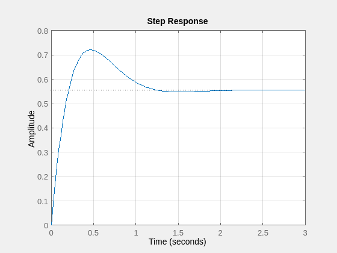
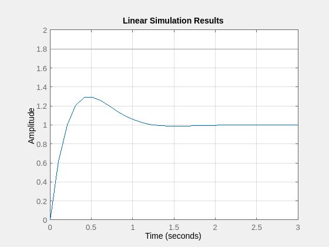
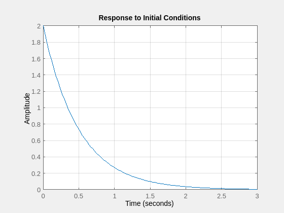
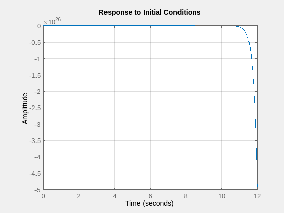

Contents
1. State Feedback Control
A = [[-2 1];[0 -3]];
B = [1;1];
C = [1 3];
D = 0;
Omega_c = [B A*B];
if rank(Omega_c) == min(size(A))
fprintf('controllability matrix is full rank')
end
K = [5 -4];
closed_loop_eigenvalues = eig(A-B*K);
controllability matrix is full rank
1.3 Step Response
A_closed = A - B*K;
sys_closed_loop = ss(A_closed, B, C, D);
step(sys_closed_loop)
grid on

2. Reference Scaling
N_bar = inv(C*inv(-A+B*K)*B);
2.2 Reference Scaling Step Response
tmax = 3;
sample_time = 0.1;
t = linspace(0,tmax,tmax*(1/sample_time));
r = N_bar*ones(length(t),1);
lsim(sys_closed_loop,r,t)
grid on
hold off

3. Transfer Function Equivalency
4. Longitudinal Helicopter Dynamics
A = [[-0.4 0 -0.01];[1 0 0];[-1.4 9.8 -0.02]];
B = [6.3; 0; 9.8];
C = [0 0 1];
D = 0;
4.1 Controllability
if rank(ctrb(A,B)) == size(A,1)
fprintf('longitudinal helicopter dynamics are controllable')
end
longitudinal helicopter dynamics are controllable
4.2 State Feedback Control Design
helo_sys = ss(A,B,C,D);
p_desired = [-1 + 1i; -1 - 1i; -2];
K = acker(A,B,p_desired);
eigenvalues_closed_loop = eig(A-B*K)
helo_sys_closed = ss(A-B*K,B,C,D);
eigenvalues_closed_loop =
-2.0000 + 0.0000i
-1.0000 + 1.0000i
-1.0000 - 1.0000i
4.3 Step Response Simulation
[y, t, x] = step(helo_sys_closed);
clf
hold on
xlabel('time (s)', 'interpreter', 'latex')
yyaxis left
ylabel('angle and angular rate', 'interpreter', 'latex')
plot(t,x(:,1), 'b-');
plot(t,x(:,2), 'c-');
yyaxis right
ylabel('velocity (m/s)', 'interpreter', 'latex')
plot(t,x(:,3))
grid on
legend('x1', 'x2', 'x3')
hold off

5. Controllability Decomposition
A = [[4 -1];[-1 4]];
B = [1;1];
C = [1 1];
D = 0;
sys = ss(A,B,C,D);
5.1 Controllability And Controllabiltiy Decomposition
if rank(ctrb(A,B)) ~= size(A,1)
fprintf('system is not fully controllable')
end
Tinv = [[1 1];[1 2]];
T = inv(Tinv);
system is not fully controllable
5.3 Control Design
K_bar = [5 0];
K = K_bar*T;
sys_closed = ss((A-B*K), B, C, D);
[V,D] = eig((A-B*K));
5.4 IC Responses
5.4.1 IC Response 1
x_init_1 = [1;1];
initial(sys_closed, x_init_1)
grid on

5.4.2 IC Response 2
x_init_2 = [1;-1];
initial(sys_closed, x_init_2)
grid on
